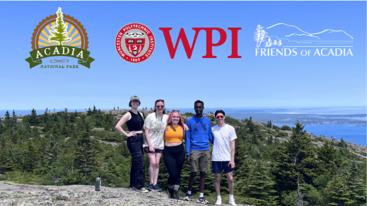

About Me
From my early days designing board games with my father to creating worlds through narrative design, I’ve always been driven by my love of gaming and storytelling. Now, I focus on bringing immersive and engaging narratives to life in interactive media.

My Journey: I’ve taken on roles from Narrative Designer to Social Media Manager, always seeking to deepen player engagement through strong worldbuilding.
Reach me at kylacdriscoll@gmail.com or on LinkedIn.
Awards & Honors
-
Phillip N. Clay Outstanding Service Award
Established to recognize the achievements of Vice President of Student Affairs Phillip Clay, this annual award is given to one Residential Advisor and one Office Assistant that has been on staff for more than one year and will be leaving the position. Criteria includes: consistently maintaining a high level of performance, personal growth, contributions to the department, and growth of the residential population. The recipient's name will be added to the plaque and displayed in the Housing & Residential Experience Center.
-
Leadership Award
This award is given to someone who has stepped up and positively contributed to their staff. This person has proven to be a thoughtful and considerate leader and follower when working with others on staff.
-
NCWIT Maine Affiliate’s Award
-
NCWIT Maine Affiliate’s Award
My Projects

Echoes of the Salt Flats
A tabletop roleplaying game created to explore how worldbuilding surfaces across different forms of interactive media.
Learn More
Plates of Power
A rogue-like game inspired by Latino culture, emphasizing power, failure, and community.
Learn More
Craven
A single-player cooking game that celebrates Jamaican culture and explores the emotional journey of studying abroad.
Learn More
IQP: Seeking Darkness in Acadia
An Interactive Qualifying Project in Acadia National Park assessing dark-sky compliance and public outreach.
Learn More
Lyre’s Galaxy
A dice game for elementary-age children to learn numbers and emotional awareness through imaginative play.
Learn More
Major Qualifying Project:
Saving the Terror Birds
For my Major Qualifying Project, I worked within a team of 5 to create 4 different forms of interactive media:a Live Action Role Play, Narrative Archival Research Puzzle, Tabletop Roleplaying Game, and an Audio Drama.
Learn MoreEchoes of the Salt Flats
Echoes of the Salt Flats is a Tabletop RPG featuring a unique crafting mechanic, designed to explore how worldbuilding surfaces in different forms of interactive media.
Fluxians have been living peacefully with their Terror Birds for years. But when Terror Birds suddenly start passing away on the borders of the salt flats, it is up to the crew to figure out why—and how to stop their sacred companions from being killed.
Narrative Designer: I collaborated with Colin Gallagher and took on narrative, showcase, and social media roles. Art by Saida Bahtierova.
Quick Start Guide
Character Sheet
Plates of Power

Plates of Power is a rogue-like game inspired by Latino culture, emphasizing power, failure, and the importance of community. Returning home from college, Ale Zardoya hears of her sister's disappearance and must embrace the role of Champion as she embarks on a mission to find her.
Social Media Manager: I was the sole Social Media Marketing Manager for Plates of Power. During the 14 weeks with this team, I created a full campaign to engage the community and promote the game.
Check out the studio's work here: Studio Berto Linktree
Featured on Instagram
Craven
Craven is a cozy cooking game for the Nintendo Switch that celebrates Jamaican culture and explores homesickness through food and storytelling.
Design Pillars: Expression, Tradition, Nostalgia
Interactive Qualifying Project: Seeking Darkness in Acadia
This IQP assessed Acadia National Park’s eligibility for International Dark Sky Park designation. We gathered field data, evaluated light fixtures, and facilitated public outreach to support sustainable lighting practices in the park.
Skills Gained: Research writing, grant preparation, public outreach, and team collaboration.
Final Report
Lyre's Galaxy
Lyre's Galaxy is a dice game for elementary-aged children that encourages number learning and emotional awareness through calming, imaginative play. In this simple game, parents and children create their own galaxy while learning and managing big feelings with a calm-down jar.
Narrative Designer: This game was created in a solo team, inspired by my younger sister.
Instructions

Storyline

Major Qualifying Project: Saving the Terror Birds
Within a team of five, four interactive media were created: a Tabletop Roleplaying game, a Live Action Roleplaying game, a Narrative Archival Research Puzzle, and an Audio Drama. These interactive media were built within the same world called Khalyn, which was developed collaboratively at the beginning of the project. We then used these projects to discover how interactivity and worldbuilding emerge in different interactive media.
My most notable creation is the Terror Birds, found on page 6. This went on to be the basis of two pieces of interactive media, as well as discussed in all four formats.
I specialized in Echoes of the Salt Flats (a TTRPG), crafting wildlife species, culture, traditions, rituals, and craftable items featured in the lore book embedded below.